xwMOOC 기계학습
네트워크 데이터
1. 네트워크 데이터 구조
네트워크 데이터는 노드(Node) 와 엣지(Edge) 로 구성된다. 노드 데이터는 네트워크 노드에 대한 상세 정보가 담겨있다. 반면에 엣지 정보는 연결된 링크 정보를 담고 있는데 from, to 형식으로 데이터를 담을 수도 있고, 노드간의 관계를 관계 없음은 0, 관계 있음은 1로 표현한다.
첫번째 네트워크 데이터 형식 표현을 Edgelist 라고 하고, 두번째 데이터 표현방법을 행렬(Matrix) 이라고 부른다.
두가지 형태를 갖는 데이터를 불러 읽어오자.
suppressMessages(library(readr))
suppressMessages(library(dplyr))
#-----------------------------------------------------------------------
# edgelist
nodes <- read_csv("https://raw.githubusercontent.com/kateto/R-Network-Visualization-Workshop/master/Data/Dataset1-Media-Example-NODES.csv", col_names = TRUE)Parsed with column specification:
cols(
id = col_character(),
media = col_character(),
media.type = col_integer(),
type.label = col_character(),
audience.size = col_integer()
)
links <- read_csv("https://raw.githubusercontent.com/kateto/R-Network-Visualization-Workshop/master/Data/Dataset1-Media-Example-EDGES.csv", col_names = TRUE)Parsed with column specification:
cols(
from = col_character(),
to = col_character(),
weight = col_integer(),
type = col_character()
)
#-----------------------------------------------------------------------
# 행렬
nodes2 <- read_csv("https://raw.githubusercontent.com/kateto/R-Network-Visualization-Workshop/master/Data/Dataset2-Media-User-Example-NODES.csv", col_names = TRUE)Parsed with column specification:
cols(
id = col_character(),
media = col_character(),
media.type = col_integer(),
media.name = col_character(),
audience.size = col_integer()
)
links2 <- read_csv("https://raw.githubusercontent.com/kateto/R-Network-Visualization-Workshop/master/Data/Dataset2-Media-User-Example-EDGES.csv", col_names = TRUE)Parsed with column specification:
cols(
.default = col_integer(),
X1 = col_character()
)
See spec(...) for full column specifications.
#-----------------------------------------------------------------------
# 데이터 살펴보기
#-----------------------------------------------------------------------
head(nodes)# A tibble: 6 x 5
id media media.type type.label audience.size
<chr> <chr> <int> <chr> <int>
1 s01 NY Times 1 Newspaper 20
2 s02 Washington Post 1 Newspaper 25
3 s03 Wall Street Journal 1 Newspaper 30
4 s04 USA Today 1 Newspaper 32
5 s05 LA Times 1 Newspaper 20
6 s06 New York Post 1 Newspaper 50
head(links)# A tibble: 6 x 4
from to weight type
<chr> <chr> <int> <chr>
1 s01 s02 10 hyperlink
2 s01 s02 12 hyperlink
3 s01 s03 22 hyperlink
4 s01 s04 21 hyperlink
5 s04 s11 22 mention
6 s05 s15 21 mention
nrow(nodes); length(unique(nodes$id))[1] 17
[1] 17
nrow(links); nrow(unique(links[,c("from", "to")]))[1] 52
[1] 49
# 데이터 중복 처리 : 총합
links <- links %>% group_by(from, to, type) %>%
summarise(weight = sum(weight)) %>%
arrange(from, to)head(nodes) 명령어를 통해서 살펴보면 head(nodes2)와 별다른 차이가 없다.
head(nodes)# A tibble: 6 x 5
id media media.type type.label audience.size
<chr> <chr> <int> <chr> <int>
1 s01 NY Times 1 Newspaper 20
2 s02 Washington Post 1 Newspaper 25
3 s03 Wall Street Journal 1 Newspaper 30
4 s04 USA Today 1 Newspaper 32
5 s05 LA Times 1 Newspaper 20
6 s06 New York Post 1 Newspaper 50
head(nodes2)# A tibble: 6 x 5
id media media.type media.name audience.size
<chr> <chr> <int> <chr> <int>
1 s01 NYT 1 Newspaper 20
2 s02 WaPo 1 Newspaper 25
3 s03 WSJ 1 Newspaper 30
4 s04 USAT 1 Newspaper 32
5 s05 LATimes 1 Newspaper 20
6 s06 CNN 2 TV 56
반면에 엣지 정보, 링크 정보는 하나는 from, to 형식으로, 다른 하나는 행렬로 표현된다는 점에서 차이가 있다.
head(links)Source: local data frame [6 x 4]
Groups: from, to [6]
from to type weight
<chr> <chr> <chr> <int>
1 s01 s02 hyperlink 22
2 s01 s03 hyperlink 22
3 s01 s04 hyperlink 21
4 s01 s15 mention 20
5 s02 s01 hyperlink 23
6 s02 s03 hyperlink 21
head(links2)# A tibble: 6 x 21
X1 U01 U02 U03 U04 U05 U06 U07 U08 U09 U10 U11
<chr> <int> <int> <int> <int> <int> <int> <int> <int> <int> <int> <int>
1 s01 1 1 1 0 0 0 0 0 0 0 0
2 s02 0 0 0 1 1 0 0 0 0 0 0
3 s03 0 0 0 0 0 1 1 1 1 0 0
4 s04 0 0 0 0 0 0 0 0 1 1 1
5 s05 0 0 0 0 0 0 0 0 0 0 1
6 s06 0 0 0 0 0 0 0 0 0 0 0
# ... with 9 more variables: U12 <int>, U13 <int>, U14 <int>, U15 <int>,
# U16 <int>, U17 <int>, U18 <int>, U19 <int>, U20 <int>
igraph 팩키지로 데이터를 시각화를 해본다. 가장 먼저 노드와 엣지 데이터프레임을 igraph 네트워크 객체로 변환해야 된다. graph.data.frame 함수가 노드와 엣지 데이터프레임 자료형을 igraph 네트워크 객체로 변환하는데 사용된다.
graph.data.frame 함수에 인자를 두개 넣는다.
- d : 네트워크 엣지(링크)를 넣어 넘긴다.
from,to형식으로 칼럼 두개가 먼저 정의되고,weight,type,label등 엣지를 표현하는 다른 정보가 나머지 칼럼에 담기게 된다. - vertices : 노드 id 로 첫번째 칼럼이 정의되고, 노드를 표현하는 다른 정보가 순차적으로 나머지 칼럼에 담기게 된다.
library(igraph)Loading required package: methods
Attaching package: 'igraph'
The following objects are masked from 'package:dplyr':
%>%, as_data_frame, groups, union
The following objects are masked from 'package:stats':
decompose, spectrum
The following object is masked from 'package:base':
union
net <- graph.data.frame(links, nodes, directed=T)
netIGRAPH DNW- 17 49 --
+ attr: name (v/c), media (v/c), media.type (v/n), type.label
| (v/c), audience.size (v/n), type (e/c), weight (e/n)
+ edges (vertex names):
[1] s01->s02 s01->s03 s01->s04 s01->s15 s02->s01 s02->s03 s02->s09
[8] s02->s10 s03->s01 s03->s04 s03->s05 s03->s08 s03->s10 s03->s11
[15] s03->s12 s04->s03 s04->s06 s04->s11 s04->s12 s04->s17 s05->s01
[22] s05->s02 s05->s09 s05->s15 s06->s06 s06->s16 s06->s17 s07->s03
[29] s07->s08 s07->s10 s07->s14 s08->s03 s08->s07 s08->s09 s09->s10
[36] s10->s03 s12->s06 s12->s13 s12->s14 s13->s12 s13->s17 s14->s11
[43] s14->s13 s15->s01 s15->s04 s15->s06 s16->s06 s16->s17 s17->s04
IGRAPH DNW- 17 49 --:- D 혹은 U : 방향성 있는 그래프 혹은 방향성 없는 그래프를 기술
- N : 노드가
name속성을 갖는 것을 기술 - W : 가중값이 있는 그래프로 엣지에
weight속성이 있음을 기술 - B : 이분(Bipartite, two-mode) 그래프로 노두가
type속성이 있음을 기술 - 17 49 : 노드가 17, 엣지가 49 개가 그래프에 존재함을 기술
attr: name (v/c), media (v/c), media.type (v/n), type.label (v/c), audience.size (v/n), type (e/c), weight (e/n):- (g/c) : graph-level character attribute
- (v/c) : vertex-level character attribute
- (e/n) : edge-level numeric attribute
- (e/c) : edge-level character attribute
E() 함수를 통해 네트워크 객체에 포함된 엣지 정보를 추출한다. V() 함수를 통해 네트워크 객체에 포함된 노드 정보를 추출한다. 직접 행렬 원소를 뽑아내는 것도 가능하다.
#------------------------------------------------------------------------
# 네트워크 객체 조회
E(net) # "net" 객체 엣지정보 조회 + 49/49 edges (vertex names):
[1] s01->s02 s01->s03 s01->s04 s01->s15 s02->s01 s02->s03 s02->s09
[8] s02->s10 s03->s01 s03->s04 s03->s05 s03->s08 s03->s10 s03->s11
[15] s03->s12 s04->s03 s04->s06 s04->s11 s04->s12 s04->s17 s05->s01
[22] s05->s02 s05->s09 s05->s15 s06->s06 s06->s16 s06->s17 s07->s03
[29] s07->s08 s07->s10 s07->s14 s08->s03 s08->s07 s08->s09 s09->s10
[36] s10->s03 s12->s06 s12->s13 s12->s14 s13->s12 s13->s17 s14->s11
[43] s14->s13 s15->s01 s15->s04 s15->s06 s16->s06 s16->s17 s17->s04
V(net) # "net" 객체 노드정보 조회+ 17/17 vertices, named:
[1] s01 s02 s03 s04 s05 s06 s07 s08 s09 s10 s11 s12 s13 s14 s15 s16 s17
E(net)$type # 엣지 속성 "type" [1] "hyperlink" "hyperlink" "hyperlink" "mention" "hyperlink"
[6] "hyperlink" "hyperlink" "hyperlink" "hyperlink" "hyperlink"
[11] "hyperlink" "hyperlink" "mention" "hyperlink" "hyperlink"
[16] "hyperlink" "mention" "mention" "hyperlink" "mention"
[21] "mention" "hyperlink" "hyperlink" "mention" "hyperlink"
[26] "hyperlink" "mention" "mention" "mention" "hyperlink"
[31] "mention" "hyperlink" "mention" "mention" "mention"
[36] "hyperlink" "mention" "hyperlink" "mention" "hyperlink"
[41] "mention" "mention" "mention" "hyperlink" "hyperlink"
[46] "hyperlink" "hyperlink" "mention" "hyperlink"
V(net)$media # 노드 속성 "media" [1] "NY Times" "Washington Post" "Wall Street Journal"
[4] "USA Today" "LA Times" "New York Post"
[7] "CNN" "MSNBC" "FOX News"
[10] "ABC" "BBC" "Yahoo News"
[13] "Google News" "Reuters.com" "NYTimes.com"
[16] "WashingtonPost.com" "AOL.com"
# 직접 네트워크 행렬을 조작
net[1,]s01 s02 s03 s04 s05 s06 s07 s08 s09 s10 s11 s12 s13 s14 s15 s16 s17
0 22 22 21 0 0 0 0 0 0 0 0 0 0 20 0 0
net[5,7][1] 0
2. 네트워크 데이터 시각화
plot(net) 명령어를 통해 시각화를 할 경우, 중복되는 엣지도 많고 해서 간략화할 필요가 있다. 이때 사용되는 명령어가 simplify() 함수다.
# plot(net)
net <- simplify(net, remove.multiple = FALSE, remove.loops = TRUE)
# net <- simplify(net, edge.attr.comb=list(Weight="sum","ignore"))
plot(net, edge.arrow.size=.01,vertex.label=NA)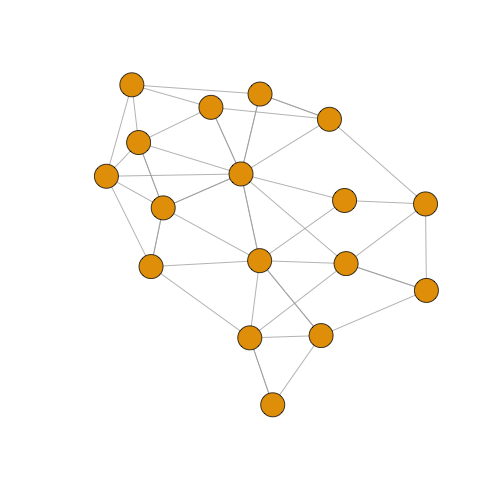
dev.off()로 장치를 초기화하고, vertex.label.family 인자를 통해 글꼴도 설정한다.
dev.off()null device
1
par(mfrow=c(1,2))
plot(net, edge.arrow.size=.01,vertex.label=NA)
plot(net, edge.arrow.size=.01, vertex.label.family="NanumMyeongjo")2.1. igraph 주요 설정 매개변수
| 노드(Node) | 노드 매개변수 설명 |
|---|---|
| vertex.color | Node color |
| vertex.frame.color | Node border color |
| vertex.shape | One of “none”, “circle”, “square”, “csquare”, “rectangle”, “crectangle”, “vrectangle”, “pie”, “raster”, or “sphere” |
| vertex.size | Size of the node (default is 15) |
| vertex.size2 | The second size of the node (e.g. for a rectangle) |
| vertex.label | Character vector used to label the nodes |
| vertex.label.family | Font family of the label (e.g.“Times”, “Helvetica”) |
| vertex.label.font | Font: 1 plain, 2 bold, 3, italic, 4 bold italic, 5 symbol |
| vertex.label.cex | Font size (multiplication factor, device-dependent) |
| vertex.label.dist | Distance between the label and the vertex |
| vertex.label.degree | The position of the label in relation to the vertex, where 0 right, “pi” is left, “pi/2” is below, and “-pi/2” is above |
| 엣지(Edge) | 엣지 매개변수 설명 |
|---|---|
| edge.color | Edge color |
| edge.width | Edge width, defaults to 1 |
| edge.arrow.size | Arrow size, defaults to 1 |
| edge.arrow.width | Arrow width, defaults to 1 |
| edge.lty | Line type, could be 0 or “blank”, 1 or “solid”, 2 or “dashed”, 3 or “dotted”, 4 or “dotdash”, 5 or “longdash”, 6 or “twodash” |
| edge.label | Character vector used to label edges |
| edge.label.family | Font family of the label (e.g.“Times”, “Helvetica”) |
| edge.label.font | Font: 1 plain, 2 bold, 3, italic, 4 bold italic, 5 symbol |
| edge.label.cex | Font size for edge labels |
| edge.curved | Edge curvature, range 0-1 (FALSE sets it to 0, TRUE to 0.5) |
| arrow.mode | Vector specifying whether edges should have arrows, possible values: 0 no arrow, 1 back, 2 forward, 3 both |
| 기타 | 기타 매개변수 설명 |
|---|---|
| margin | Empty space margins around the plot, vector with length 4 |
| frame | if TRUE, the plot will be framed |
| main | If set, adds a title to the plot |
| sub | If set, adds a subtitle to the plot |
2.2. 노드와 엣지에 매개변수 반영
노드와 엣지를 네트워크 시각화에 매개변수를 통해 반영하는 방식은 두가지가 있다. 먼저 plot() 함수에 노드와 엣지 매개변수를 적어 넣는다.
edge.arrow.size=.4 엣지 화살표 크기를 .4로 설정하고, 엣지에 곡선을 .3으로 반영한다.
plot(net, edge.arrow.size=.4, edge.curved=.3)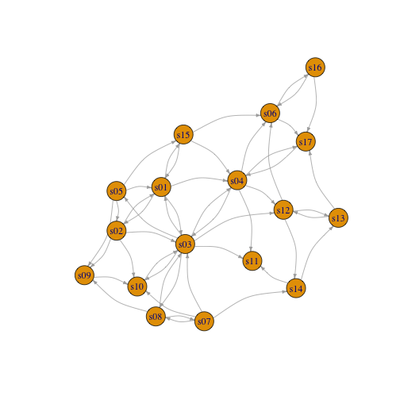
엣지 색상은 오렌지색상으로, 노드는 회색으로, 노드 외곽 색상은 흰색으로 설정한다. 노드 라벨을 V(net)$media 변수를 사용하고 노드 라벨 색상은 검정색으로 설정한다.
plot(net, edge.arrow.size=.2, edge.color="orange",
vertex.color="dark gray", vertex.frame.color="#ffffff",
vertex.label=V(net)$media, vertex.label.color="black") 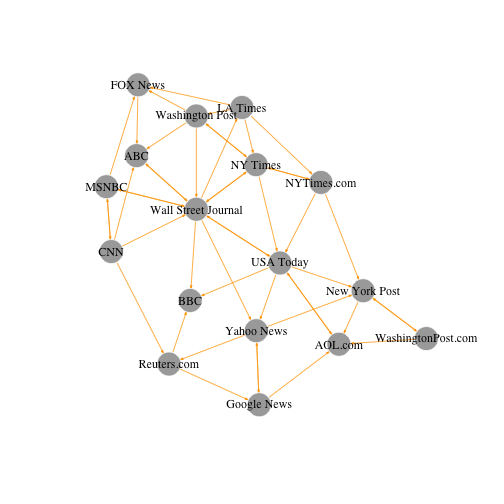
두번째 방식은 igraph 객체에 속성으로 추가하는 것이다. 예를 들어, 미디어 유형에 따라 네트워크 노드에 색상을 추가하고, 연결 중앙성(Degree Centrality, 링크가 많으면 더 큰 노드)에 따라 크기를 조정한다. 가중치(weight)에 따라 엣지 선폭도 설정한다.
#------------------------------------------------------------------------
# 03.02. 첫번째 방식: igraph 객체에 속성으로 적용
# 미디어 유형에 따른 색상 생성:
colrs <- c("gray50", "tomato", "gold")
V(net)$color <- colrs[V(net)$media.type]
# 노드 연결 중앙성에 따른 노드 크기 설정:
deg <- igraph::degree(net, V(net), mode="all")
V(net)$size <- deg*3
# audience size 값을 사용해서 노드 크기 설정:
V(net)$size <- V(net)$audience.size*0.6
# 노드 ID로 현재 라벨이 설정되어 있는데, 라벨이 표시되지 않도록 설정:
V(net)$label <- NA
# 엣지 선폭을 가중치(weight)에 따라 설정:
E(net)$width <- E(net)$weight/2
# 화살표 크기와 엣지 색상을 변경:
E(net)$arrow.size <- .2
E(net)$edge.color <- "gray80"
E(net)$width <- 1+E(net)$weight/12
plot(net)
colrs <- c("gray50", "tomato", "gold")
legend(x=-1.5, y=-1.1, c("Newspaper","Television", "Online News"), pch=21,
col="#777777", pt.bg=colrs, pt.cex=2, cex=.8, bty="n", ncol=1)
노드 라벨을 적용하는 것이 의미론적인 면에서 더 의미가 있을 수 있다.
#------------------------------------------------------------------------
# 03.03. 노드 라벨를 활용한 네트워크 시각화
par(mfrow=c(1,1))
plot(net, vertex.shape="none", vertex.label=V(net)$media,
vertex.label.font=2, vertex.label.color="gray40", edge.arrow.size=.1,
vertex.label.cex=.7, edge.color="gray85", edge.width = 1+E(net)$weight/12)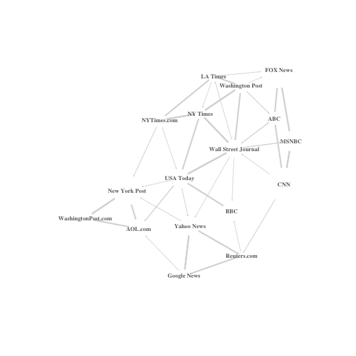
엣지 색상을 노드와 맞춰 시각화를 함으로써 노드와 엣지를 함께 이해하는 것도 가능하다.
#------------------------------------------------------------------------
# 03.04. 엣지를 노드에 맞춰 색상을 맞춤
edge.start <- ends(net, es=E(net), names=F)[,1] # get the "from" node
edge.col <- V(net)$color[edge.start]
plot(net, edge.color=edge.col, edge.curved=.1)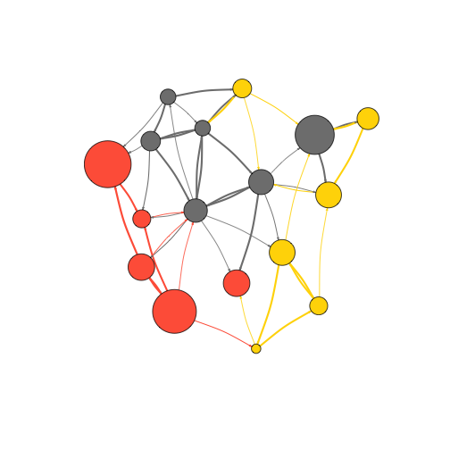
3. 네트워크 배치(Layout)
네트워크 배치(Layout)는 네트워크 노드에 대한 좌표를 반환하는 단순히 알고리즘이라고 볼 수 있다.
barabasi.game 함수를 사용해서 80개 노드를 갖는 그래프를 통해 네트워크 배치에 대한 탐색을 시작해 본다. 선호적 연결원리(Preferential attachment)를 따라 노드 하나에서 시작해서 체계적으로 증가시켜 나간다.
##=======================================================================
## 01. 네트워크 배치
##=======================================================================
source("02.code/01-clean.R")Error in file(filename, "r", encoding = encoding): 커넥션을 열 수 없습니다
source("02.code/04-network-viz.R")Error in file(filename, "r", encoding = encoding): 커넥션을 열 수 없습니다
# 바라바시 게임 (Preferential attachment)
library(igraph)
net.bg <- barabasi.game(80)
V(net.bg)$frame.color <- "white"
V(net.bg)$color <- "orange"
V(net.bg)$label <- ""
V(net.bg)$size <- 10
E(net.bg)$arrow.mode <- 0
plot(net.bg)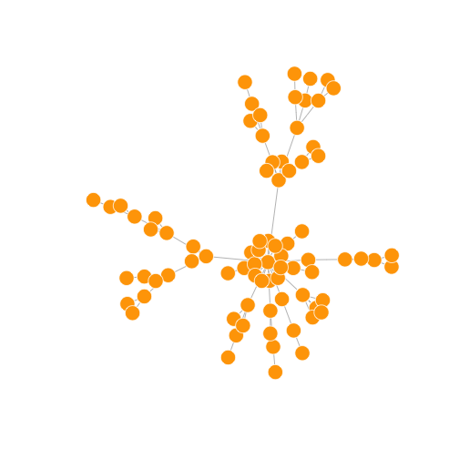
# layout 설정
plot(net.bg, layout=layout.random)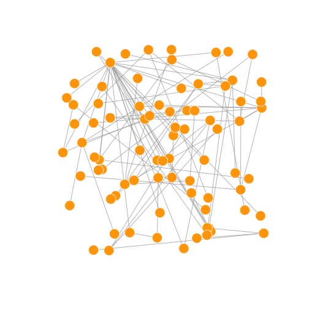
사전에 네트워크 배치에 대해 설정하고 이를 적용하는 것도 가능하다. 내장된 네트워크 배치 기능은 다음과 같다.
layout.random(): 임의 네트워크 배치layout.circle(): 원형태 네트워크 배치layout.sphere(): 구형태 네트워크 배치
# 사전에 노드좌표를 설정
l <- layout.circle(net.bg)
plot(net.bg, layout=l)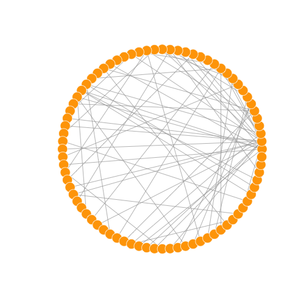
# 개발자가 직접 설정
l <- matrix(c(1:vcount(net.bg), c(1, vcount(net.bg):2)), vcount(net.bg), 2)
plot(net.bg, layout=l)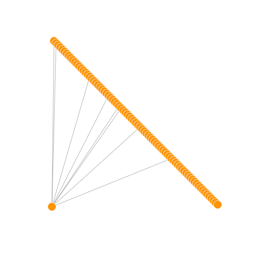
# 노드 배치 내장함수: 무작위
l <- layout.random(net.bg)
plot(net.bg, layout=l)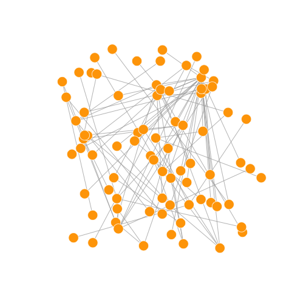
# 노드 배치 내장함수: 원
l <- layout.circle(net.bg)
plot(net.bg, layout=l)# 노드 배치 내장함수: 구
l <- layout.sphere(net.bg)
plot(net.bg, layout=l)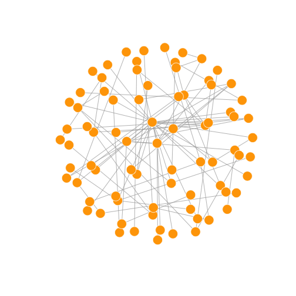
3.1. 네트워크 배치 알고리즘
심미적으로 보기 좋은 네트워크 그래프를 얻기 위해 많은 알고리즘이 제안되었고, Fruchterman-Reingold 알고리즘을 비롯한 다양한 알고리즘이 존재한다. 물리학에서 가져온 스프링, 힘 등의 개념을 노드와 엣지에 적용하여 컴퓨터의 도움을 얻어 데이터가 크지 않은 경우 빠른 시간내에 시각화가 가능하다.
Force-directed 네트워크 배치 알고리즘은 엣지 길이가 유사하게 하고 엣지가 가능하면 서로 겹치지 않도록 그래프를 생성하는데 물리시스템으로 모의시험을 수행한다. 노드는 서로 가까워지면 서로 밀어내는 성질을 갖는 전기적 입자이며, 엣지는 스피링처럼 동작해서 서로 연결된 노드를 잡아댕긴다.
결과적으로 노드는 시각화 평면에 넓게 고르게 분산되어 퍼지게 되고, 더 많은 연결점을 갖는 노드는 서로 더 가까이 모이게 되어 직관적으로 이해가 된다. 이런 유형의 알고리즘이 갖는 단점은 수렴에 시간이 오래 걸리고, ~ 1,000 개보다 큰 노드를 갖는 그래프에는 잘 사용되지 않는다. 일부 모수를 조정해서 네트워크 그래프를 조정하는 것도 가능하다.
area: 기본 설정값으로 노드 제곱repulserad: 밀어내는 반경weight: 노드 사이 끌림을 증대
fruchterman.reingold.grid는 fruchterman.reingold와 유사하지만 속도가 더 빠르다.
Kamada Kawai 알고리즘도 많이 사용되는 Force-directed 네트워크 알고리즘으로 스프링 시스템에 에너지를 최소화하는 방향으로 그래프를 생성시킨다. 이와 연관된 igraph 팩키지에 포함된 알고리듬이 layout.spring()이다.
LGL 배치 알고리즘은 대형 연결 그래프를 시각화하는데 개발되었다. 루트 뿌리를 설정해야 하는데 배치 중앙에 위치한 노드가 그것이다.
기본 디폴트 설정으로, 그래프 좌표는 x, y 모두 [-1,1] 사이 위치한다. 좌표를 변경할 경우 rescale=FALSE 설정하고 수작업으로 좌표를 변경하는 것도 가능하다. layout.norm 으로 그래프 가장자리를 정규화할 수도 있다.
# 1. Fruchterman-Reingold: Force-directed 배치 알고리즘
l <- layout.fruchterman.reingold(net.bg, repulserad=vcount(net.bg)^3,
area=vcount(net.bg)^2.4)
par(mfrow=c(1,2), mar=c(0,0,0,0))
plot(net.bg, layout=layout.fruchterman.reingold)
plot(net.bg, layout=l)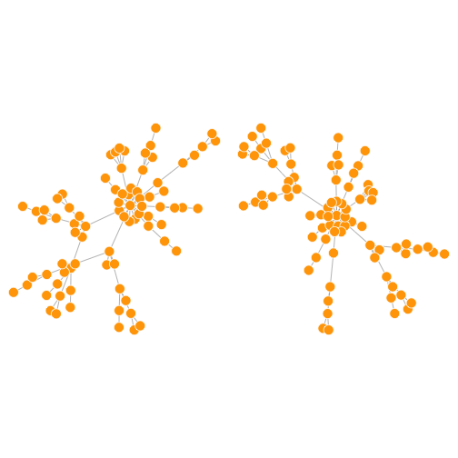
# 2. Kamada Kawai 배치 알고리즘
l <- layout.kamada.kawai(net.bg)
plot(net.bg, layout=l)
l <- layout.spring(net.bg, mass=.5)
plot(net.bg, layout=l)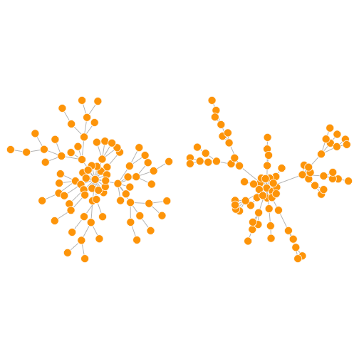
# 3. LGL 배치 알고리즘
plot(net.bg, layout=layout.lgl)
# 4. Fruchterman-Reingold: 수동 설정
l <- layout.fruchterman.reingold(net.bg)
l <- layout.norm(l, ymin=-1, ymax=1, xmin=-1, xmax=1)
par(mfrow=c(2,2), mar=c(0,0,0,0))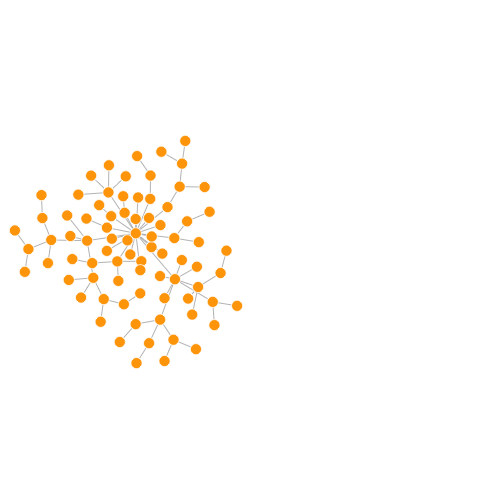
plot(net.bg, rescale=F, layout=l*0.4)
plot(net.bg, rescale=F, layout=l*0.6)
plot(net.bg, rescale=F, layout=l*0.8)
plot(net.bg, rescale=F, layout=l*1.0)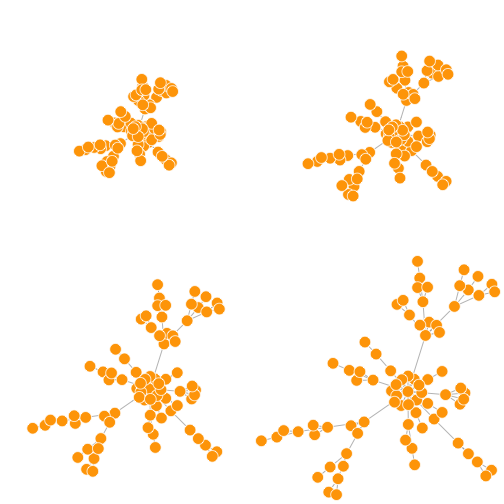
igraph 팩키지에 적용된 네트워크 배치 알고리즘은 layout.auto를 사용한다. 자동으로 적절한 배치 알고리즘이 자동 선정되는데 네트워크 크기와 연결강도를 고려한다.
igraph 팩키지에 내장된 네트워크 배치 알고리즘은 다음과 같다.
# igraph 내장 배치 알고리즘
layouts <- grep("^layout\\.", ls("package:igraph"), value=TRUE)
layouts <- layouts[!grepl("bipartite|merge|norm|sugiyama|gem", layouts)]
par(mfrow=c(3,6), mar=c(0,0,0,0))
for(layout in layouts) {
print(layout)
l <- do.call(layout, list(net))
plot(net, edge.arrow.mode=0, layout=l, main=layout) }[1] "layout.auto"
[1] "layout.circle"
[1] "layout.davidson.harel"
[1] "layout.drl"
[1] "layout.fruchterman.reingold"
[1] "layout.fruchterman.reingold.grid"
[1] "layout.graphopt"
[1] "layout.grid"
[1] "layout.grid.3d"
[1] "layout.kamada.kawai"
[1] "layout.lgl"
[1] "layout.mds"
[1] "layout.random"
[1] "layout.reingold.tilford"
[1] "layout.sphere"
[1] "layout.spring"
[1] "layout.star"
[1] "layout.svd"
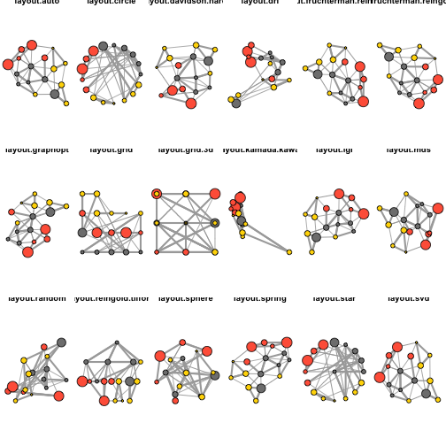
4. 네트워크 하이라이트(Highlight)
네트워크 배치 및 매개변수를 변경하여 다양하게 네트워크 시각화가 가능하지만, 다소 부족한 점이 있다. 노드 유형과 크기를 식별할 수 있지만, 엣지 링크가 조밀해서 전체적인 구조를 파악하기에 부족한 점이 있다.
이에 대한 해법은 가장 중요한 연결만 묶고 나머지는 제거해서, 네트워크를 성기게 만들면 구조를 보는 것이 더 낫게 된다.
plot(net)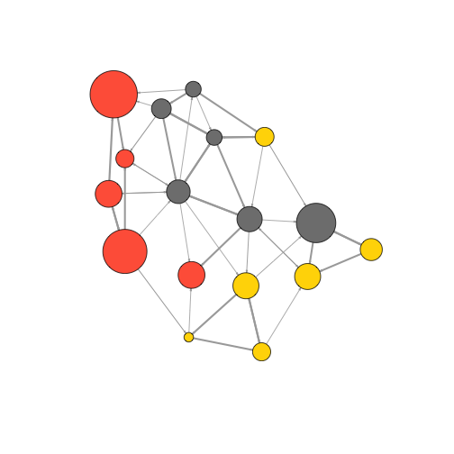
중요 엣지 연결을 추출하는 정교한 방식이 있지만, 가장 단순하게 네트워크 평균적 연결보다 큰 것만 연결을 정의하고, 나머지는 delete.edges(net, edges)를 사용해서 연결을 제거한다.
#------------------------------------------------------------------------
# 01.01. 엣지 제거
# 엣지 연결 현황 파악
hist(links$weight)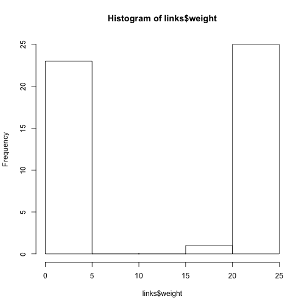
mean(links$weight)[1] 12.40816
sd(links$weight)[1] 9.905635
# 중요 엣지 연결 추출
cut.off <- mean(links$weight)
net.sp <- igraph::delete.edges(net, E(net)[weight<cut.off])
l <- layout.fruchterman.reingold(net.sp, repulserad=vcount(net)^2.1)
plot(net.sp, layout=l) 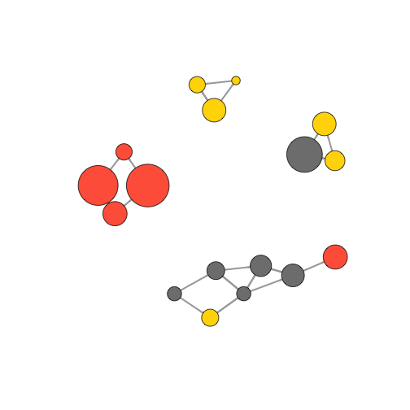
4.2. 엣지 제거 또다른 방법
엣지를 제거하는 다른 방법으로 하이퍼링크(hyperlink) 네트워크와 언급(mention) 네트워크를 별도로 설정하여 이를 네트워크 배치 알고리즘에 넣어 시각화를 하는 것도 가능한 방법이다.
#------------------------------------------------------------------------
# 02. 원배치 : 하이퍼링크, 언급
# 원배치 하이퍼링크
E(net)$width <- 1.5
plot(net, edge.color=c("dark red", "slategrey")[(E(net)$type=="hyperlink")+1],
vertex.color="gray40", layout=layout.circle)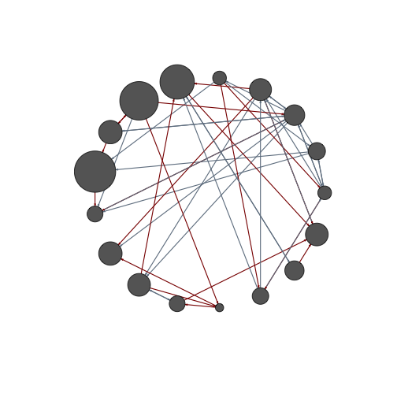
# 하이퍼링크, 언급
net.m <- net - E(net)[E(net)$type=="hyperlink"] # 엣지를 제거하는 또다른 방법
net.h <- net - E(net)[E(net)$type=="mention"]
par(mfrow=c(1,2))
plot(net.h, vertex.color="orange", main="Tie: Hyperlink")
plot(net.m, vertex.color="lightsteelblue2", main="Tie: Mention")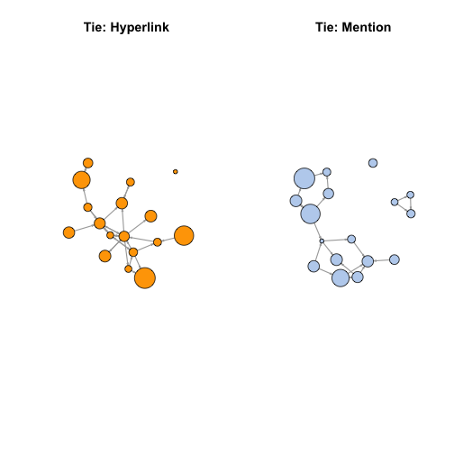
# Fruchterman.Reingold 배치 알고리즘
l <- layout.fruchterman.reingold(net)
plot(net.h, vertex.color="orange", layout=l, main="Tie: Hyperlink")
plot(net.m, vertex.color="lightsteelblue2", layout=l, main="Tie: Mention")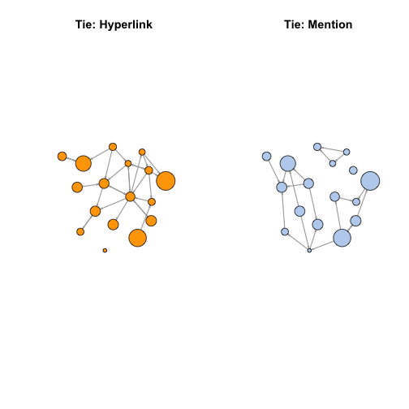
# 커뮤니티 반영
V(net)$community <- optimal.community(net)$membership
colrs <- adjustcolor( c("gray50", "tomato", "gold", "yellowgreen"), alpha=.6)
plot(net, vertex.color=colrs[V(net)$community])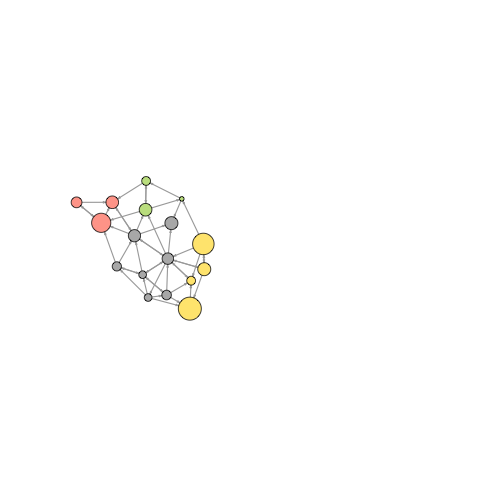
4.3. 특정 노드 혹은 엣지 하이라이트 강조
shortest.paths 함수는 해당 네트워크 노드 간에 최단경로 행렬정보를 처리하여 반환한다. 예를 들어, NYT와 다른 언론기관간에 거리를 시각화보자.
#------------------------------------------------------------------------
# 01. 최단거리
dist.from.NYT <- shortest.paths(net, algorithm="unweighted")[1,]
oranges <- colorRampPalette(c("dark red", "gold"))
col <- oranges(max(dist.from.NYT)+1)[dist.from.NYT+1]
plot(net, vertex.color=col, vertex.label=dist.from.NYT, edge.arrow.size=.6,
vertex.label.color="white")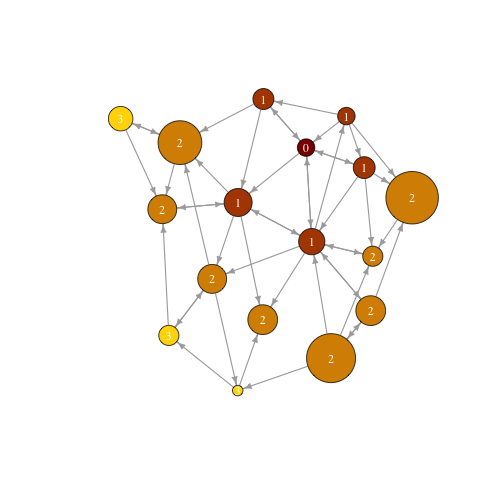
WSJ 주변을 시각화할 수도 있다. neighbors 함수를 통해 특정 언론사와 한 단계 더 걸친 언론사를 찾아내기 좋다. 특정 노드와 연결된 모든 엣지링크를 찾는 함수로 incident가 있다.
#------------------------------------------------------------------------
# 02. WSJ 인접 노드
col <- rep("grey40", vcount(net))
col[V(net)$media=="Wall Street Journal"] <- "#ff5100"
neigh.nodes <- neighbors(net, V(net)[media=="Wall Street Journal"], mode="out")
col[neigh.nodes] <- "#ff9d00"
plot(net, vertex.color=col)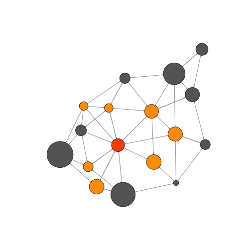
또다른 방법은 특정 노드 집단을 mark를 통해 표식하는 것이다.
#------------------------------------------------------------------------
# 03. 표식 Mark
# 표식 Mark : 1 집단
plot(net, mark.groups=c(1,4,5,8), mark.col="#C5E5E7", mark.border=NA)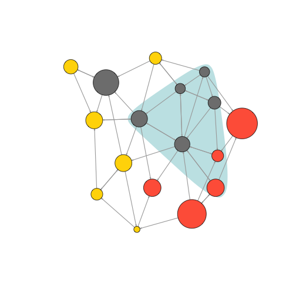
# 표식 Mark : 2 집단
plot(net, mark.groups=list(c(1,4,5,8), c(15:17)),
mark.col=c("#C5E5E7","#ECD89A"), mark.border=NA)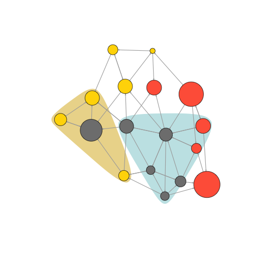
네트워크 특정 경로를 하이라이트하는 것도 가능하다.
#------------------------------------------------------------------------
# 04. 경로 표시
news.path <- get.shortest.paths(net, V(net)[media=="MSNBC"],
V(net)[media=="New York Post"],
mode="all", output="both")
# 엣지 변수 색상 생성:
ecol <- rep("gray80", ecount(net))
ecol[unlist(news.path$epath)] <- "orange"
# 엣지 변수 선폭 생성:
ew <- rep(2, ecount(net))
ew[unlist(news.path$epath)] <- 4
# 노드 색상변수 생성:
vcol <- rep("gray40", vcount(net))
vcol[unlist(news.path$vpath)] <- "gold"
plot(net, vertex.color=vcol, edge.color=ecol,
edge.width=ew, edge.arrow.mode=0)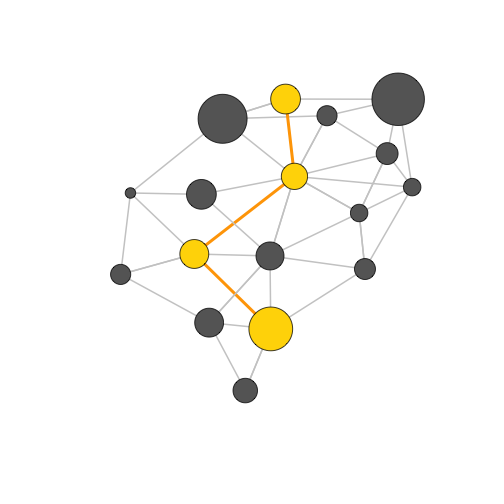